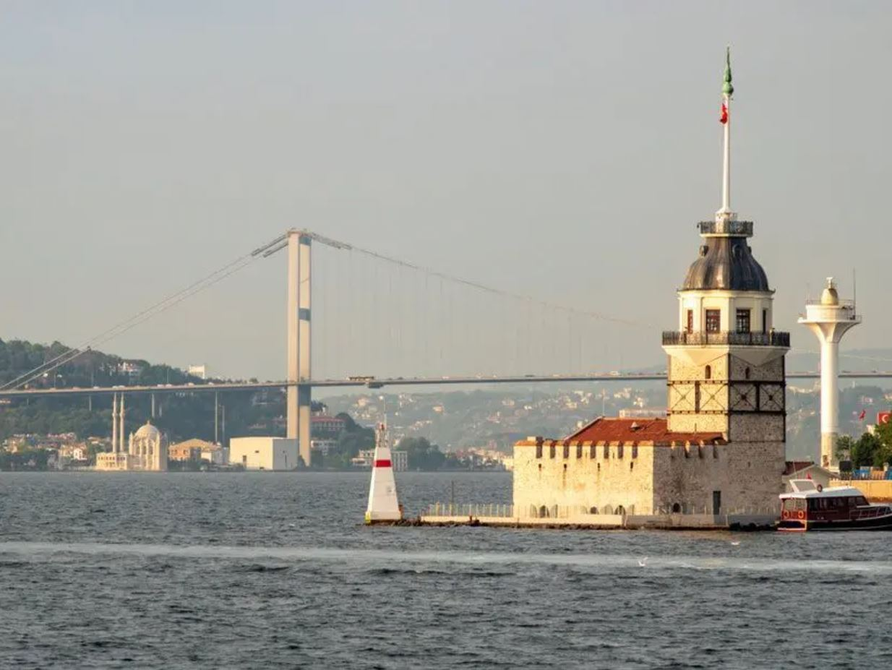

Kız Kulesi
Kız Kulesi Hakkında
Kız Kulesi Hakkında
Kyzikos'taki deniz zaferinden sonra, MÖ 408'de Atinalı general Alkibiadis, muhtemelen Karadeniz'den gelen gemiler için Üsküdar'ın önündeki küçük bir kaya üzerine özel bir istasyon inşa etti.[1]
Üsküdar'ın sembolü hâline gelen kule, Üsküdar’da Bizans devrinden kalan tek eserdir. MÖ 24 yıllarına kadar uzanan bir geçmişe sahiptir.
1110'da Bizans İmparatoru I. Aleksios, taş duvarla korunan ahşap bir kule inşa etti.[1] Kuleden Konstantinopolis'teki Mangana semtinde (tarihi yarımadada bir mahalle) dikilmiş başka bir kuleye uzanan bir demir zincir gerildi.[1] Adacık daha sonra su altı kalıntıları hala görülebilen bir savunma duvarı ile Asya kıyısına bağlandı.[1] 1453'te İstanbul'un Osmanlılar tarafından fethi sırasında, kulede Venedikli Gabriele Trevisano tarafından yönetilen bir Bizans garnizonu bulunuyordu.[1] Daha sonra yapı, Fatih Sultan Mehmed döneminde Osmanlı Türkleri tarafından gözetleme kulesi olarak kullanılmıştır.[1]
İlk olarak Yunan döneminde bir mezara ev sahipliği yapan bu ada, Bizans döneminde inşa edilen ek bina ile gümrük istasyonu olarak kullanılmıştır. Osmanlı döneminde ise gösteri platformundan savunma kalesine, sürgün istasyonundan karantina odasına kadar birçok işlev yüklenmiştir. Asli görevi olan ve yüzyıllardan beri varlığı ile insanlara, geceleri ise geçen gemilere göz kırpan feneri ile yol gösterme işlevini hiç kaybetmemiştir.
Bazı Avrupalı tarihçiler buraya Leander Kulesi derler. Kule hakkında pek çok rivayet bulunmaktadır. Antik Çağ'da arkla (küçük kale) ve damialis (dana yavrusu) adları ile anılan kule, bir ara da "Tour de Leandros" (Leandros'un Kulesi) ismi ile ünlenmiştir. Şimdi ise Kız Kulesi ismi ile bütünleşmiş ve bu ismi ile anılmaktadır.
Çok eski geçmişi olan Kız Kulesi, bir zamanlar Boğaz'dan geçen gemilerden vergi alınmak maksadı ile kullanılmıştır. Kule ile Avrupa yakası boyunca büyük bir zincir çekilmiş ve gemilerin Anadolu yakası ile Kız Kulesi arasından geçişine (O zamanlar gemi boyutları küçük olduğu için geçebilmekteydi.) izin verilmiştir. Bir süre sonra kule, zinciri taşıyamamış ve Avrupa yakasına doğru yıkılmıştır. Kuleden suyun içine bakıldığında yıkıntıları görülmektedir.
Kule 1509 depreminde yıkılmış, yeniden inşa edilmiş ve 1721'de yanmıştır.[1] Sadrazam Damat İbrahim Paşa tarafından imar emri verilmiş ve yeni bina deniz feneri olarak kullanılmış; çevre surlar 1731 ve 1734 yıllarında onarılmıştır. Sonunda 1763'te kule daha dayanıklı taştan yeniden inşa edildi.[1] 1829'dan itibaren karantina istasyonu olarak kullanılmış ve 1832'de Sultan II. Mahmud tarafından yeniden restore edilmiştir.[1] 1945'te, kuleyi yamama sırası liman yönetimine geldi.[1] Daha sonra 1998'de tekrar restore edildi, kısa bir süre önce James Bond filmi Dünya Yetmez'de yer aldı.
17 Ağustos 1999 depremi ve Marmara Denizi'ndeki tsunamiden sonra kuleyi güçlendirmek için çelik destekler eklendi.[2] Sarayburnu'ndaki eski Roma, Bizans ve Osmanlı başkentinin manzarasına sahip iç mekan bir kafe ve restorana dönüştürülmüştür.[3] Özel tekneler gün boyunca kule ile kıyı arasında gidip gelmektedir.[4]
Kız Kulesi 2000 yılında restore edilerek restoran haline dönüştürülmüştür. 2021'de kuleyi restore etme çalışmaları yeniden başladı. Tamamlandığında artık içinde bir restoran olmayabilir.